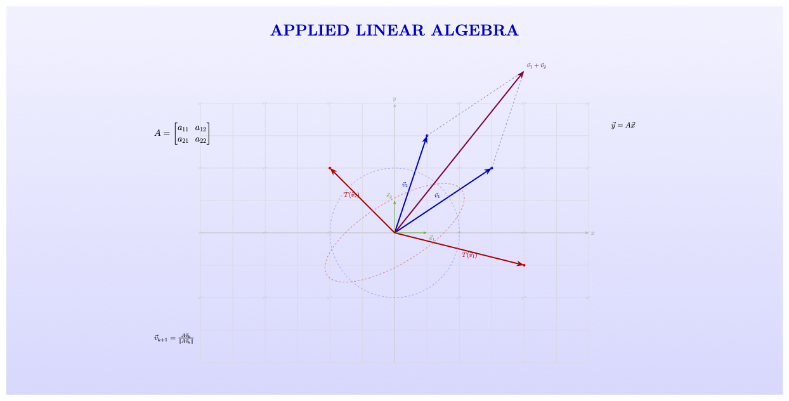

Applied Linear Algebra#
About This Book#
Linear algebra is one of the most well studied and widely applied branches of mathematics. In recent years, linear algebra has played a prominent role in the rise of machine learning and artificial intelligence through its key role in the development of deep neural networks such as those that power large language models such as ChatGPT, whose architectures can be loosely described simply as sequences of linear transformations interspersed with nonlinearities.
The ubiquitious role of linear algebra in applications old and new means that there are plenty of resources - i.e. other books and/or online content - already available with which one can learn linear algebra; however, after spending more than a decade introducing students to linear algebra for the first time, I haven’t found a resource that addresses the subject the way that I would like to address it. So here we are.
There are two primary challenges one faces when learning linear algebra at the level where it is usually introduced, around the second or third year of college and usually after a calculus course. The first is that even in an applied linear algebra course the subject is inherently more abstract than any of the math one would have learned previously. For example, where in calculus one considers functions ‘one at a time’, studying, say, properties of a function like \(f(x) = xe^{-x}\) such as its extrema or end behavior, in linear algebra one considers infinite ‘spaces’ of vectors like \(\mathbb{R}^2\) and how such spaces are transformed under a given linear operator. This requires - or forces one to develop - some additional mathematical maturity. The second challenge is that even in an applied linear algebra course, interesting real-world applications are hard to come by until quite a bit of abstract theory has been developed. In my introductory applied linear algebra course it is often not until after mid-semester that we finally can begin to explore meaningful applications.
Closely tied to both of these challenges is the computational complexity of linear algebra, a topic that is largely ignored in introductory courses but is central to every practical application of linear algebra. Every linear algebra operation is computationally expensive, and it is a disservice to a student of linear algebra to pretend otherwise. Linear systems are never solved via matrix inversion; it’s simply to expensive and error-prone. Eigenvalues are not computed via determinants, determinants are too computationally expensive for anything other than toy examples and thought exercises. And yet, countless hours are spent teaching students techniques such as these that are never used in the real world.
The purpose of this book is to address the computational aspects of linear algebra head-non while maintaining an introductory presentation of linear algebra. That is why it is written using Jupyter notebooks: so that examples can be coded up and computational costs considered throughout. I hope you will leave with a realistic perspective on how linear algebra is done in the real world.
As is probably clear, this is an opinionated book that is not for everyone. One central opinion is that someone learning linear algebra needs to do just enough toy problems by hand to understand the operation or topic and then needs to consider the computational aspects of what they are doing: the computational costs, the stability of the operations, and so on. The presentation adheres to this approach throughout.
Outline#
This book is a work in progress. Upon completion it will cover many of the usual topics covered in an introductory linear algebra course, including the complete solution of \(A\mathbf{x} = \mathbf{b}\), eigenvalue and eigenvector calculations, and various matrix decompositions including \(A=LU\), \(A=QR\), and the singular value decomposition.
One area where the book differs significantly from most introductory linear algebra texts is in its treatment of eigenvalue and eigenvector computations. The characteristic equation via the \(2\times 2\) determinant is introduced and used for some calculations by hand, after which the focus is on power iteration and the \(QR\) algorithm. Obviously to be included in an introductory linear algebra course these topics need to be introduced in fairly basic form, but the accompanying exercises to provide the opportunity to go further if desired.
Applications to be covered include the normal equations of linear regression, Markov chains, recommender systems (PageRank), PCA, neural networks, and perhaps some additional topics from probability theory. A few standard topics that are not practical are omitted; for instance, determinants will be mostly relegated to an appendix.
Software#
All code samples in this book use Python 3.XX and the standard scientific Python stack: NumPy, SciPy, Matplotlib. Indeed, the book itself is written using the Jupyter-books package, and the source can be downloaded or forked from GitHub.
Errors/Typos/Omissions#
If you spot an error or a typo please let me know! You can send me an email at jeremiah.johnson@unh.edu or submit a pull request. Do you have a topic you’d like to see included, or see a topic whose treatment you’d like to modify? Submit a pull request and I’ll consider incorporating it.
Donations#
This book is liberally licensed using the MIT license so that it can be used as an open educational resource. If you benefit from it and would like to support its maintenance as well as the development of similar open educational resources, you can click the link at the bottom right of any page to make a donation. I appreciate your support!